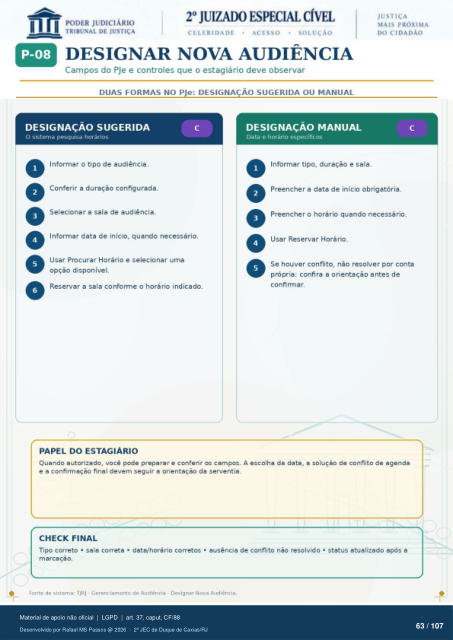

Transcrição automática em português, ainda não revisada. Confira grafia, prazos e termos jurídicos na imagem e no PDF antes de utilizar.
DESIGNAR NOVA AUDIÊNCIA
Campos do PJe e controles que o estagiário deve observar
DUAS FORMAS NO PJe: DESIGNAÇÃO SUGERIDA OU MANUAL
DESIGNAÇÃO SUGERIDA
O sistema pesquisa horários Informar 0 tipo de audiência.
Conferir a duração configurada. Selecionar a sala de audiência.
Informar data de início, quando necessário. Usar Procurar Horário e selecionar uma
opção disponível. Reservar a sala conforme o horário indicado.
PAPEL DO ESTAGIÁRIO
DESIGNAÇÃO MANUAL
Data e horário específicos Informar tipo, duração e sala.
Preencher a data de início obrigatória. Preencher o horário quando necessário.
Usar Reservar Horário. Se houver conflito, não resolver por conta
própria: confira a orientação antes de confirmar.
Quando autorizado, você pode preparar e conferir os campos. A escolha da data, a soluçao de conflito de agenda e a confirmação final devem seguir a orientação da serventia.
CHECK FINAL
TIPO correto • sala correta • data/horário corretos • ausência de conflito nao resolvido • status atualizado após a marcaçao.
Fonte de sistema: TJRJ - Gerenciamento de Audiência - Designar Nova Audiência.
Ver também o infográfico original (página 63)
